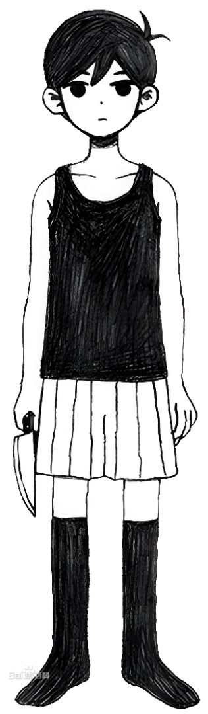
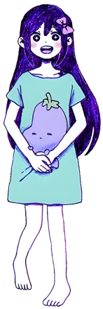
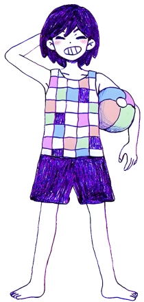
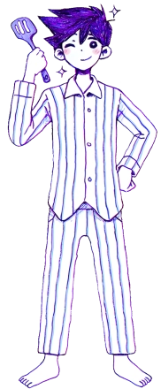
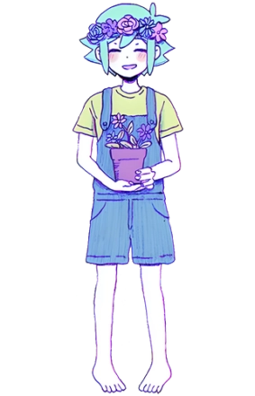
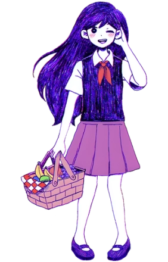

Omori
- 
Omori
- 本作主人公。沉默寡言，总是摆着一张扑克脸。在脑内世界中的日常是在白色空间发呆以及和好友们一同展开奇妙的冒险。
- Omori是主人公在脑内世界的名字，在现实世界中主人公的真正名字是Sunny。
- 和姐姐玛里养着一只名为“喵呜”的黑猫。
- 代表花是白色郁金香。
- 
Aubrey
- Sunny的好友，性格直率，善良且勇敢。经常和凯吵架。
- 在现实世界中，父亲去世，母亲精神崩溃，周围人对她的冷言冷语。
- 代表花是剑兰。
- 
Kel
- Sunny的好友，阳光积极，爱打篮球，经常和奥布里吵架。
- 在现实世界中，在听闻玛里的死讯后虽有情绪低落的时刻，但在之后靠打篮球的爱好进入了体育社团，在社团里交到了新朋友，很快就走出了玛里死亡的阴影。
- 代表花是仙人掌。
- 
Hero
- Sunny的好友，凯的哥哥。温柔而富有组织力，多才多艺。
- 在现实世界中，原本梦想着成为一名厨师，在听闻玛里死亡的消息后一蹶不振，放弃了自己的厨师梦。同凯争吵过后，勉强振作了起来，专注于学业，最终考上了大学成为了一名医学生。但始终无法面对玛里的死亡。
- 代表花是玫瑰。
- 
Basil
- Sunny的好友，性格内向自卑。喜欢养植物，有一台用于记录伙伴欢乐时光的相机。
- 在现实世界中，因为手中被Sunny涂黑的相册落到奥布里手中，被奥布里误解是自己涂黑了相册，经常遭到奥布里的霸凌。
- 代表花是向日葵。
- 
Mari
- Sunny的姐姐，温柔善良，在脑内世界中负责为大家准备野餐。
- 在现实世界中已经去世，她的存在与死因则是游戏最关键的真相。她的死亡造成了六人小队逐渐疏离。
- 代表花是铃兰。